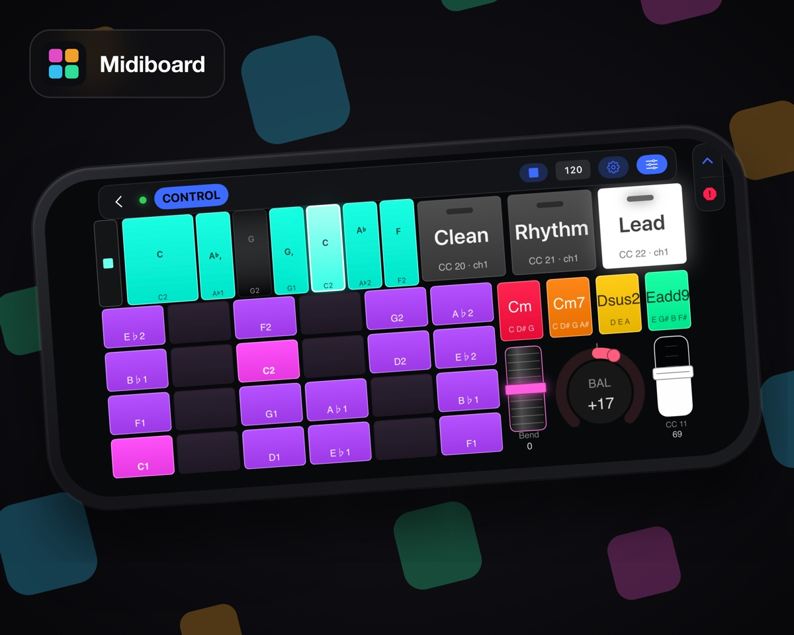

İhtiyaçtan doğan uygulamalar.
Ben Safa. Bir şeye ihtiyacım olup da aradığım gibisini bulamayınca oturup kendim yapıyorum. Buradakilerin hepsi öyle başladı: önce benim derdimdi, sonra başkasının da derdi olduğu çıktı. Tasarımdan koda, siteden destek mailine kadar hepsi tek kişi.
İstanbul · support@bulatapps.com


İhtiyaç: sahnede elime uyan bir kontrolcü
Midiboard
App Store'da · iPhone ve iPad
Sahnede telefonu MIDI kontrolcü olarak kullanıyordum ama tuşların yeri hep başkasının kararıydı. Midiboard'da ekran boş bir ızgara: pad, klavye, akor, fader, XY, step sequencer, ne lazımsa elinin gittiği yere koyuyorsun.
iPhone ve iPad'de çalışıyor. Bluetooth ya da Wi-Fi üzerinden standart MIDI gönderiyor; Ableton, Logic, Gig Performer, synth'ler, ne çalıyorsan.

İhtiyaç: bütün kılavuzlarda tek arama
Crossleaf
App Store'da · iPhone ve iPad
Uçuş ekiplerinin yüzlerce sayfalık el kitaplarında bir terimi dosya dosya araması üzerine başladı; öğrenciler ve doktorlar için de aynı dert çıktı. Bütün PDF'lerini ekliyorsun, bir kere arıyorsun; hangi belgede, hangi sayfada geçtiğini tek listede görüyorsun. Taranmış sayfalarda da çalışıyor.
İnternete hiç bağlanmıyor, çünkü insanların en çok aradığı belgeler genelde dışarı çıkmaması gereken belgeler. İndirmesi ücretsiz, sınırsız belge için tek seferlik ödeme.

İhtiyaç: ev arkadaşlarıyla ay sonu hesabı
Kırışalım
App Store'da · iPhone · Android testte · web
Ev arkadaşlarıyla her ay sonu aynı hesap, aynı tartışma. Kira, fatura, market ne varsa Kırışalım'a yazıyorsunuz; ay sonunda kimin kime ne kadar vereceğini en az havaleyle o çıkarıyor.
Paraya dokunmuyor: ödemeyi siz yapıyorsunuz, alan "aldım" diyor. Hesap ve sunucu kullanan tek uygulamam bu, çünkü evin defteri herkesin telefonunda aynı olmalı.
İhtiyaç: masada hep açık bir metronom
Mac için küçük şeyler
Her şey burada başladı: aranıp bulunacak bir pencere değil, menü çubuğunda hep hazır duran bir metronom ve akort aleti istedim. Arkasından iki de oyuncak geldi. Hepsi ücretsiz, birkaç megabayt.

Nasıl çalışıyorum
Az ama işe yarar
İhtiyaçtan doğunca gereksiz bir şey koymaya gerek kalmıyor. Mac uygulamalarının sesleri bile kodla üretiliyor, bu siteler düz HTML.
Hiçbiri senden veri toplamıyor: analitik yok, reklam yok, takip yok. Kırışalım dışındakiler internete hiç bağlanmıyor.
Gitar ve klavye çalıyorum, müzik yapıyorum; ihtiyaçlarımın çoğu da oradan çıkıyor.
Uygulamalardan önce gömülü sistemler ve .NET üzerinde çalıştım; bayt sayma alışkanlığım oradan kaldı.
Alet çantası
- Swift
- AppKit
- Core Animation
- AVAudioEngine
- UIKit
- CoreBluetooth
- Flutter
- Dart
- Supabase
- TypeScript
- C / C++
- Python
Açık kaynak
İşe yarayan parçaları paylaşıyorum
Bir uygulama için yazdığım bir parça başka yerde de işe yarayacak gibiyse ayırıp açık kaynak yapıyorum.
-
QuietOverlay
Swift package · macOS 13+ · MIT
Mac oyuncaklarının altındaki katman. Tıklamaların içinden geçtiği, yalnız senin istediğin yerde durduğu ve yazdığın uygulamadan klavyeyi asla çalmayan tam ekran bir pencere.
Ücretsiz, MIT lisanslı.
İletişim
Bir ihtiyacın mı var?
Bir sorun, bir soru ya da "şöyle bir şey olsa" dediğin bir fikir… Bütün uygulamaların maili aynı yere düşüyor, hepsini ben okuyorum.
- support@bulatapps.comE-posta · her uygulama için destek
- github.com/safabulatKod
- linkedin.com/in/safabulatUzun hali